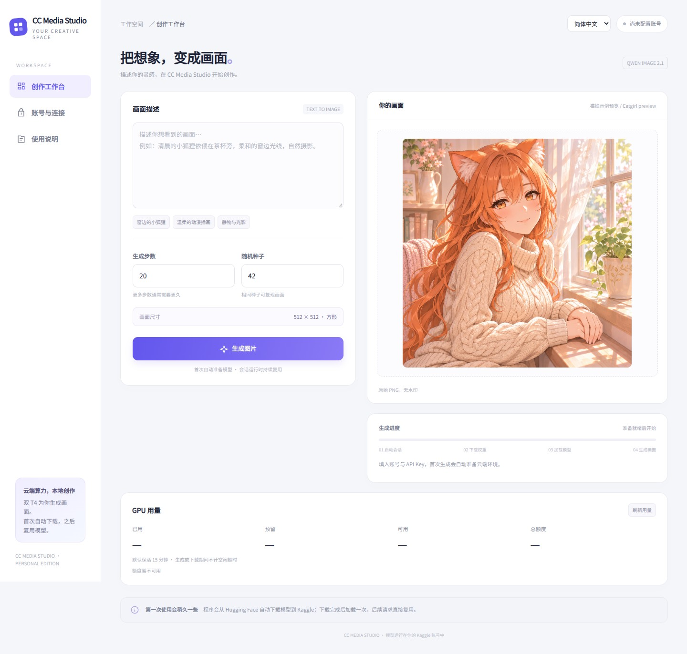
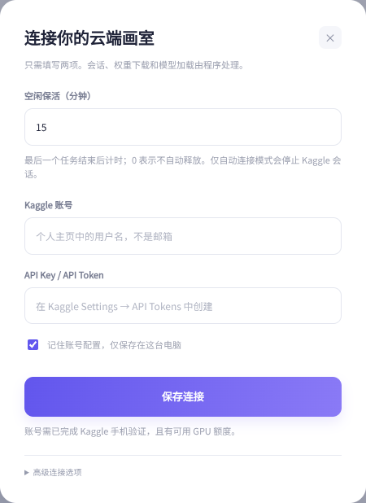
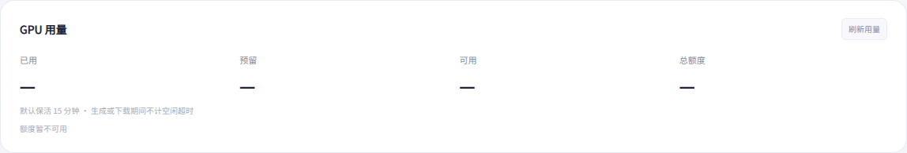
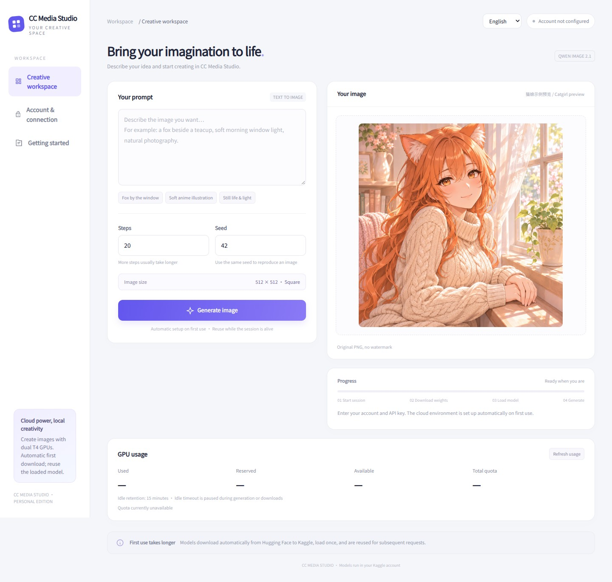
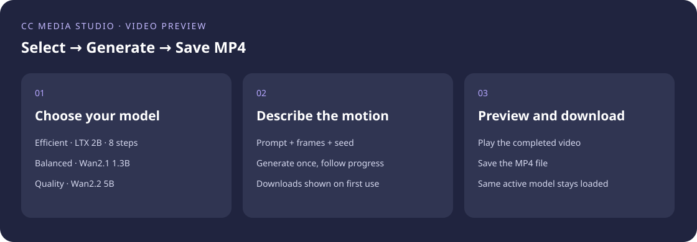

双击 start_windows.bat
下载 ZIP → 右键全部解压 → 进入项目目录 → 双击启动。首次创建运行环境并安装依赖，之后直接打开 GUI。
把模型和计算交给云端。
电脑上打开 GUI，填 Kaggle 用户名和 Key，就能生图。
Windows · Linux · macOS ｜ Python 3.11 或 3.12
GitHub 源码已公开，可直接下载 ZIP 或 clone 仓库。

下载 ZIP → 右键全部解压 → 进入项目目录 → 双击启动。首次创建运行环境并安装依赖，之后直接打开 GUI。
解压后，在终端进入项目目录，执行 bash start_mac.command。自动创建环境、安装依赖并启动界面。
解压后，在终端进入项目目录，执行 bash start_linux.sh。浏览器打开本机创作工作台。
启动前安装 Git 或下载 ZIP，以及 Python 3.11 或 3.12。Windows 安装 Python 时勾选 Add python.exe to PATH。“一键”指启动器自动安装项目依赖。
git clone https://github.com/cc6pzupa/free-media-studio.git
cd free-media-studio
# Windows
py -3 launch.py
# macOS / Linux
python3 launch.py程序打开后保持启动窗口运行。浏览器地址为 http://127.0.0.1:8787。
完成账号注册和手机号验证，确认账号有可用 GPU 额度。复制个人主页中的用户名，例如 your_kaggle_username。
打开 Kaggle API 设置，找到 API Tokens，创建并复制自己的 Token。
点击 GUI 左侧“账号与连接”。在 Kaggle 账号填用户名，在 API Key / API Token粘贴 Key。勾选“记住账号配置”，点击“保存连接”。
加速策略保持 自动加速 · 双卡优先，空闲保活保持 15 分钟。高级连接选项保持折叠即可。

回到创作工作台，先选择 Qwen-Image 2.1，把下面这段放进“画面描述”。使用默认 20 步、种子 42，点击生成。选择其他模型时，推荐步数会自动切换。
一位成年的橙色长发猫耳女性坐在窗边，温柔的二次元插画，奶油色毛衣，浅色背景，柔和晨光，细腻线条。右侧出现生成结果后，点击“保存图片”。下次打开直接写新提示词；同一活跃会话会复用已加载的模型。
从 Hugging Face 自动下载所选模型，显示文件字节和进度。Qwen 首次原始权重约 23.51 GB，准备后的 INT8 / Q4 私有缓存约 16 GB；另外两个模型使用各自的缓存。
内核活着就继续用同一个模型。新内核优先拉取自己的私有 Dataset 缓存，下载支持 4 路并行与断点续传。
打开客户端 → 写提示词 → 点击生成并保存。GUI、ComfyUI 与 MCP 都使用同一个本地后台。

使用自己的 Kaggle 账号额度。卡片显示已用、预留、总额度、可用额度和重置时间，可用额度按总额度减去已用与预留计算。
最后一个任务结束后开始计时。下载、加载、生图及排队时不触发空闲释放。查询用量不会重置计时。
设置范围 0–1440 分钟，0 关闭自动释放。自动账号模式超时后释放当前会话，下次生成重新加载。后台在线时执行释放。
python desktop.py --keep-alive-minutes 15
python launch.py --keep-alive-minutes 30| 模型 | 默认步数 | 用途 | 双 T4 执行方式 | 云端热请求示例 |
|---|---|---|---|---|
| Qwen-Image 2.1 | 20，可调 | 通用文生图、画质优先 | CFG 正负分支分别在两张卡同时采样；复用编码器与 Q4 副本 | 约 49.7 秒 |
| Z-Image Turbo | 9，可调 | 效率优先 | GPU 1 编码，GPU 0 采样与解码 | 约 8.2 秒 |
| SDXL-Lightning | 固定 4 | 快速预览，推荐英文提示词 | GPU 1 两个文本编码器，GPU 0 采样与解码 | 约 1.5 秒 |
热请求示例来自模型就绪后的双 T4 生成，包含编码、模型迁移、生成与 PNG 保存；首次下载、模型加载及客户端网络传输另计。
GUI、ComfyUI、MCP、HTTP API 和 Kaggle 独立 Notebook 共用策略。结果显示实际的 CFG 双卡并行或编码 / 生成分卡，以及编码、迁移、采样和解码耗时。
选择模型后自动使用推荐步数，seed 默认 42。切换模型释放旧实例，保留磁盘权重；再次请求同一活跃模型直接复用。Qwen 双卡副本也会复用。
Qwen：用户名/qwen-image-studio-assets
Z-Image：用户名/cc-media-z-image-turbo
SDXL：用户名/cc-media-sdxl-lightning
在“账号与连接 → 加速策略”选择 自动加速 · 双卡优先或原分卡模式。Kaggle 独立 Notebook 有同样的下拉选项。ComfyUI 与 MCP 读取已保存的配置。
python launch.py --acceleration auto
python launch.py --acceleration splitQwen 使用 CFG 5、空格负面提示词和 KV cache；双卡加速不可用时自动恢复原分卡生成。
| 入口 | 怎么用 |
|---|---|
| GUI | 双击启动器，填 Kaggle 用户名与 Key，输入提示词生成。 |
| ComfyUI | 仓库放入 ComfyUI/custom_nodes/cc-media-studio，用 ComfyUI 的 Python 安装 requirements.txt 并重启。添加 CC Media Image，连接 Save Image；读取 GUI 已保存的账号配置。 |
| Kaggle 直接运行 | 导入 kaggle_standalone.ipynb，开启双 T4 与 Internet，运行全部单元格，在 Notebook 界面生图。 |
| 本地 MCP | 安装 requirements-mcp.txt，AI 客户端注册 mcp_server.py；提供状态、生成、查进度、取图四个工具。 |
POST http://127.0.0.1:8787/v1/images/generations
Authorization: Bearer <GUI 高级设置中的本机 API Key>
{"prompt":"An adult orange-haired catgirl by a window, soft anime illustration",
"model_id":"z-image-turbo","size":"512x512","seed":42}
GET http://127.0.0.1:8787/v1/studio/usage结果图片在 data[0].b64_json，usage 包含耗时、模型复用与缓存状态。本机 API Key 在 GUI 高级设置中显示。
保持启动窗口运行，浏览器打开 http://127.0.0.1:8787。端口占用时运行 python desktop.py --port 8788。
首次需要准备云端会话、下载权重、量化编码器、保存缓存和加载模型。看进度卡片中的实际阶段；之后优先读取私有缓存，并在活跃会话内复用。
核对 Kaggle 用户名和 Key，再查看账号验证、GPU 剩余额度及任务日志。用户名使用个人主页最后一段。
等当前任务结束，运行 python studio_worker.py --stop，然后 git pull，重新运行启动器。启动器会安装变化的依赖。
A lightweight local interface with cloud inference.
Enter your Kaggle username and API key, then generate.
Windows / Linux / macOS · Python 3.11 or 3.12
The source is public on GitHub. Download the ZIP or clone the repository.

Double-click start_windows.bat. The launcher creates an environment and installs dependencies automatically.
Open a terminal in the extracted folder and run bash start_mac.command.
Open a terminal in the extracted folder and run bash start_linux.sh.
Install Python 3.11 or 3.12 first. The automatic setup installs project dependencies. The GUI opens at http://127.0.0.1:8787.
The GUI displays used, reserved, available and total GPU quota, its reset time, and the idle countdown. Quota updates every minute and supports manual refresh. Available quota equals total minus used and reserved.
Default retention is 15 idle minutes after the final local task finishes. Pending tasks and active work do not trigger idle release. Status checks do not extend it. Set 0–1440 minutes in the GUI or use --keep-alive-minutes; 0 disables automatic release. The online local worker releases the connected session in automatic account mode.
| Model | Default steps | Dual-T4 strategy | Warm request example |
|---|---|---|---|
| Qwen-Image 2.1 · Quality | 20, adjustable | Concurrent positive/negative CFG branches | 49.7 s |
| Z-Image Turbo · Efficient | 9, adjustable | Encoding on GPU 1; sampling/decoding on GPU 0 | 8.2 s |
| SDXL-Lightning · Preview | Exactly 4 | Both encoders on GPU 1; sampling/decoding on GPU 0 | 1.5 s |
Each request returns one 512 × 512 PNG, seed 42 by default. Times include encoding, model transfers, generation and PNG saving after the models are ready; first downloads, cold loading and client/network transfer are separate.
All entry points default to Automatic · prefer dual GPU. Choose Encoder/model split in Account & connection, or use python launch.py --acceleration split. Restore --acceleration auto for automatic preference. Results show the actual execution strategy and phase timings. Active models and Qwen replicas are reused; model switching preserves downloaded files.
Model caches: username/qwen-image-studio-assets, username/cc-media-z-image-turbo, and username/cc-media-sdxl-lightning.
Automatic dependency setup, username/key connection, three selectable models, automatic dual-GPU preference, first-time downloads, real progress, private caching, model/replica reuse, configurable idle retention, GPU quota display, bilingual GUI, durable jobs and local API.
GUI; CC Media Image for ComfyUI; the standalone Kaggle notebook; local stdio MCP with studio_status, generate_image, get_job and get_image.
Three video tiers are available. Installers and a local image/video gallery are available. Next: image-to-video, additional sizes and controls, image editing and GUI batch generation. Switch to the Chinese view to edit and export the interactive checklist.
MCP 是项目的第四个入口。把它接进支持本地 stdio MCP的电脑客户端，AI 就能检查用量、提交生图、跟踪进度并取回图片。GUI、ComfyUI 和 MCP 使用同一个本地后台、账号配置和任务队列。
按前面的图 1 填用户名和 Key，勾选“记住账号配置”，点击“保存连接”。同一台电脑、同一个系统用户运行 AI 客户端。
保存后可以关闭 GUI 窗口。账号配置、任务队列和模型连接由独立后台处理。
先运行过双击启动器，项目里就会有 .easy-venv。下面使用这个环境。
C:\Tools\free-media-studio-main。cmd，按回车。.\.easy-venv\Scripts\python.exe -m pip install -r requirements-mcp.txt安装结束后，窗口重新出现输入提示符，就可以继续。此处安装 MCP 依赖即可，生图仍在 Kaggle。
cd ，保留最后的空格。.easy-venv/bin/python -m pip install -r requirements-mcp.txtcd /home/yourname/Apps/free-media-studio-main
.easy-venv/bin/python -m pip install -r requirements-mcp.txt如果使用教程中的手动虚拟环境，把 .easy-venv 换成 .venv。GUI 和 MCP 使用同一项目目录最方便。
打开 AI 客户端设置，找到 MCP / 工具 / 本地服务器，选择传输方式 stdio。服务器名称填 CC Media Studio。
| 客户端输入项 | 填写内容 |
|---|---|
| 名称 / Name | CC Media Studio |
| 传输 / Transport | stdio |
| 命令 / Command | 项目虚拟环境 Python 的绝对路径 |
| 参数 / Arguments | mcp_server.py 的绝对路径，作为一个参数 |
| 环境变量 / Environment | GUI 已保存账号配置时，留空 |
下面的 JSON 贴进 AI 客户端的 MCP 配置编辑器。将示例路径替换成自己电脑上的项目路径。
Windows 先在 GUI 保存账号并提交一次任务，启动独立后台；或在单独终端运行 .\.easy-venv\Scripts\python.exe studio_worker.py，保持该终端打开，再连接 MCP。
{
"mcpServers": {
"cc-media-studio": {
"command": "C:/Tools/free-media-studio-main/.easy-venv/Scripts/python.exe",
"args": ["C:/Tools/free-media-studio-main/mcp_server.py"]
}
}
}复制文件夹地址后，把 \ 改成 /，再拼上上面的文件名即可。若用反斜杠，JSON 中要写成双反斜杠。
{
"mcpServers": {
"cc-media-studio": {
"command": "/Users/yourname/Apps/free-media-studio-main/.easy-venv/bin/python",
"args": ["/Users/yourname/Apps/free-media-studio-main/mcp_server.py"]
}
}
}在项目目录运行 pwd，可取得自己的完整路径。
{
"mcpServers": {
"cc-media-studio": {
"command": "/home/yourname/Apps/free-media-studio-main/.easy-venv/bin/python",
"args": ["/home/yourname/Apps/free-media-studio-main/mcp_server.py"]
}
}
}有些客户端使用表单而不是 JSON：把 command 填入命令框，把 args 中的路径填入参数框。MCP 通过标准输入输出通信；这里填写的是程序路径。
保存 MCP 设置，重启 AI 客户端，打开服务器的工具列表。提供六项工具：下面四项，以及 generate_video 和 get_video；视频用法见视频预览章节。
| 工具 | 用途 | 输入 |
|---|---|---|
studio_status | 查看账号、队列、GPU 用量和保活倒计时 | 无参数 |
generate_image | 提交一次生图，立即返回任务编号 | prompt、request_id；可选 model_id、seed、steps |
get_job | 查询下载、加载、生图进度和任务状态 | job_id |
get_image | 取得完成后的 PNG 及耗时信息 | job_id |
把下面这段发给已连接 MCP 的 AI 客户端：
请用 CC Media Studio 生成一张二次元猫娘图：
成年橙发猫耳女性坐在窗边，奶油色毛衣，柔和晨光，温柔日系插画。
先检查当前状态；选择 Qwen-Image 2.1，使用 20 步、seed 42 提交一个任务。
随后查询原任务进度，完成后把图片展示给我。AI 应按下面的顺序调用工具。任务编号由实际返回值决定。
1. studio_status()
2. generate_image(
prompt="An adult orange-haired catgirl by a window, cream sweater, soft morning light, gentle anime illustration",
request_id="catgirl-first-001",
model_id="qwen-image-2.1",
seed=42,
steps=20
)
→ 返回 job_id
3. get_job(job_id="上一步返回的编号")
→ queued / running / complete
→ 每次查询间隔至少 2 秒
4. get_image(job_id="同一个编号")
→ 返回 image/png 与 usage成功标志：get_job 显示 complete，随后 get_image 返回图片。支持图片显示的客户端会直接呈现 PNG。
首次准备权重较久时，继续查询同一个 job_id。每次新创作使用新的 request_id；同一次提交的网络重试使用原编号，这样会取回原任务。
让 AI 调用 studio_status，可读取 GPU 额度、当前队列与空闲保活配置。用量查询不启动 GPU，不延长空闲倒计时。
已完成图片保存在 ~/.kaggle-qwen-client/studio/images/<job_id>.png；Windows 位于当前用户目录的同名文件夹。自定义配置路径时，图片保存在该配置旁的 studio/images。
继续生成时，在对话中描述新画面，分配新的 request_id 即可。活跃会话复用模型；默认空闲 15 分钟后，自动账号模式释放会话。
generate_image 的 model_id 支持 qwen-image-2.1、z-image-turbo、sdxl-lightning。省略 steps 时分别使用 20 / 9 / 4 步；SDXL 固定 4 步。
generate_image(
prompt="An adult blue-haired catgirl reading a book, anime illustration",
request_id="catgirl-z-001",
model_id="z-image-turbo",
seed=42
)每次新图片使用不同的 request_id。可连续提交多条任务，后台串行排队；分别保留各自返回的 job_id，逐个查询并取图。每个任务仍为一张 PNG。
studio_status 显示加速配置，usage.parallel_strategy 显示实际策略：cfg_parallel 或 encoder_split。账号设置中的策略自动用于 MCP。
在 MCP 客户端给该服务器添加 KAGGLE_USERNAME 与 KAGGLE_API_TOKEN，旧 Key 可用 KAGGLE_KEY。已有 GUI 配置时优先使用已保存配置。主教程推荐先在 GUI 填好两项。
requirements-mcp.txt？args 是否为真实存在的 mcp_server.py 绝对路径？保存后重启客户端再查看。在同一系统用户下打开 GUI，勾选“记住账号配置”并保存。GUI 与 MCP 若设置了 EASY_CONFIG_PATH，两边使用同一路径。
本地后台继续处理。重新打开客户端，用原 job_id 查询即可。GUI 也可以查看同一后台的任务。若后台进程中断，已执行任务标为 interrupted；先查看原任务状态，再决定下一次操作。
完成当前任务后，在项目目录依次执行：
# 使用本项目环境中的 Python
python studio_worker.py --stop
git pull
python -m pip install -r requirements-mcp.txt
# 然后重启 AI 客户端停止命令作用于本地后台。Kaggle 会话可在网页会话管理中结束。
# Windows
.\.easy-venv\Scripts\python.exe -m pip install -r requirements-mcp.txt
# macOS / Linux
.easy-venv/bin/python -m pip install -r requirements-mcp.txtOn Windows, start the independent worker by saving your account and submitting a task in the GUI, or run .\.easy-venv\Scripts\python.exe studio_worker.py in a separate terminal and keep it open. Then connect MCP. macOS / Linux can start the worker automatically.
Add a local stdio MCP server in your AI client's settings. For clients accepting JSON, use the following shape and replace both paths with your real absolute paths:
{
"mcpServers": {
"cc-media-studio": {
"command": "/absolute/path/free-media-studio-main/.easy-venv/bin/python",
"args": ["/absolute/path/free-media-studio-main/mcp_server.py"]
}
}
}On Windows, the command ends in .easy-venv/Scripts/python.exe. When using a manually created environment, substitute .venv. If using a form, put the Python executable in Command and the server script in Arguments. Saved GUI credentials mean the Environment field can stay empty.
Save and restart the AI client. Confirm these tools appear (six in total, including generate_video and get_video): studio_status, generate_image, get_job, get_image.
studio_status()
generate_image(prompt="An adult orange-haired catgirl by a window, soft anime illustration",
request_id="catgirl-first-001",seed=42,steps=20,model_id="qwen-image-2.1")
# Use the returned job_id:
get_job(job_id="returned_id")
# Poll at least 2 seconds apart. When complete:
get_image(job_id="returned_id")Use model_id to select qwen-image-2.1, z-image-turbo, or sdxl-lightning; omitting steps uses 20/9/4 respectively. The saved acceleration preference applies to MCP. Separate request IDs may be queued serially, one image per task. Ask the AI to check status, submit once, track the same job, and display the completed PNG. A new intended image uses a new request ID. A network retry of the same submission uses the original ID. Completed files are retained under ~/.kaggle-qwen-client/studio/images/.
The background worker survives GUI closure and MCP disconnection. Status includes GPU quota and idle retention; reading it does not allocate a GPU or reset the idle clock. Automatic account mode defaults to 15 minutes of idle retention. For missing tools, check the Python path, installed MCP requirements, and absolute server path, then restart the client.
在 Releases 下载 Windows x64 安装程序、macOS Intel / Apple Silicon 的 DMG 或 PKG、Linux x86_64 的 deb / rpm。安装包包含 Python 与客户端依赖。macOS 需要 15 或更新版本，Linux 需要 glibc 2.35 或更新版本。
安装并启动后，填写 Kaggle 用户名与 Key。图片和视频工作台均有历史画廊入口：搜索提示词、筛选图片 / 视频、收藏、预览、播放 MP4、下载原文件和复制提示词。旧版保存的完成任务会自动显示，浏览作品不启动 GPU。
作品和账号配置保存在本机用户目录，升级与卸载不会清理这些数据。删除作品会同时删除本机原文件，无法撤销；Kaggle 独立 Notebook 的文件不会自动导入。当前 Windows / macOS 安装包未配置发行者签名或 Apple 公证。
Download Windows x64 setup, macOS Intel / Apple Silicon DMG or PKG, or Linux x86_64 deb / rpm from Releases. Python and client dependencies are bundled. macOS requires version 15 or later; Linux requires glibc 2.35 or later.
Open Gallery from either workspace to search, filter, favorite, preview images, play videos, download originals or copy prompts. Existing completed local jobs appear automatically. Browsing does not allocate a GPU. Local user data survives upgrades and uninstall. Deleting a work permanently deletes its local original. Standalone Kaggle Notebook files are not automatically imported. Windows/macOS publisher signing and Apple notarization are not configured.
视频预览功能已包含在主分支。首次安装可下载项目 ZIP，解压后双击启动脚本；也可使用下面的命令。启动器自动安装客户端依赖。
git clone https://github.com/cc6pzupa/free-media-studio.git
cd free-media-studio
python launch.py
# macOS / Linux: python3 launch.py
| 档位 | 模型 | 默认步数 | 双 T4 策略 |
|---|---|---|---|
| 效率 | LTX-Video 2B Distilled 0.9.6 | 固定 8 | 上下文并行 |
| 平衡 | Wan2.1 T2V 1.3B | 30 | CFG 并行 |
| 质量 | Wan2.2 TI2V 5B | 30 | CFG 并行 |
当前提供文生视频，帧数 9–81、每次递增 8。先用默认短片，再增加长度。图片和视频共用串行队列，切换类型会释放当前模型。
海底动物演示 · Wan2.2 5B 质量档 · 双 T4 · 768 × 448 · 24 fps · 10.1 秒。海龟、鲸鲨、水母三个生成镜头剪辑，每段 81 帧、30 步。下载海底样片 MP4
已有任务会用原任务编号继续查询。若提交响应丢失，页面保留原请求，点击“恢复上次提交”即可；刷新后仍可恢复。后台暂时离线时保留任务。新的视频使用新的请求编号。
MCP 提供 generate_video、get_video，共用 get_job 查询进度。ComfyUI 使用 CC Media Video (Preview) 节点，输出 MP4 路径。Kaggle 可导入 kaggle_video.ipynb，开启 Internet 和双 T4 后运行全部单元格。
generate_video(prompt="An adult anime catgirl, hair moving in a breeze", model_id="ltx-video-2b-distilled", frames=33, seed=42, request_id="video-001")
get_job(job_id="returned_id")
# 完成后 / When complete:
get_video(job_id="returned_id")The video preview is included on main. Use the installation steps above or download its ZIP. Run the launcher, save your Kaggle username and API key, then open Video Preview in the sidebar.
LTX uses dual-GPU context parallelism; both Wan models use dual-GPU CFG parallelism. The preview currently supports text-to-video.
Underwater wildlife demo · Wan2.2 5B quality tier · dual T4 · 768 × 448 · 24 fps · 10.1 seconds. Three generated shots edited together: sea turtle, whale shark and jellyfish; 81 frames and 30 steps each. Download ocean MP4.
After a disconnection, the GUI tracks the original job. If the submission response was lost, click Resume submission to retry the saved request with the same identifier, including after refresh. Temporary backend outages preserve the job.
MCP provides generate_video and get_video; query progress with get_job. The ComfyUI CC Media Video (Preview) node returns an MP4 path. Import kaggle_video.ipynb for standalone Kaggle use with Internet and dual T4 enabled. Full video instructions.
项目原创代码与文档采用 PolyForm Noncommercial 1.0.0。许可范围内的非商业使用免费，允许按许可条款修改和分发；分发时须保留 LICENSE 和 NOTICE。超出许可范围的商业使用需事先取得书面授权。具体允许用途以许可证原文为准。
查看许可证 · 商业授权说明与申请方式。第三方依赖、模型权重及另行许可的材料遵循各自许可证。
Original project code and documentation use PolyForm Noncommercial 1.0.0. Noncommercial uses permitted by the license are free of charge; modification and redistribution are permitted under its terms. Retain LICENSE and NOTICE when redistributing. Commercial uses outside those permissions require a separate written license before use. The license text defines the permitted purposes.
License · Commercial licensing and requests. Third-party dependencies, model weights and separately licensed materials retain their own licenses.
截图中的猫娘为界面示例；实际生成图片会显示在同一个预览区域。